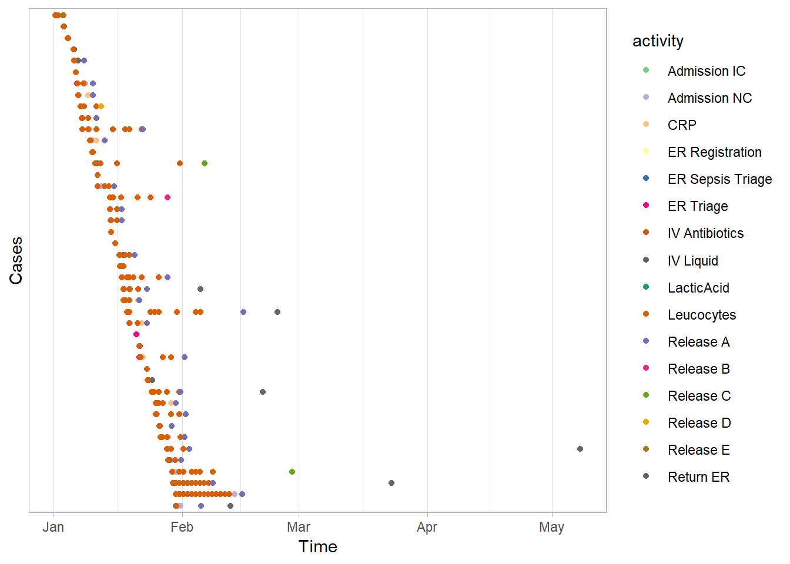
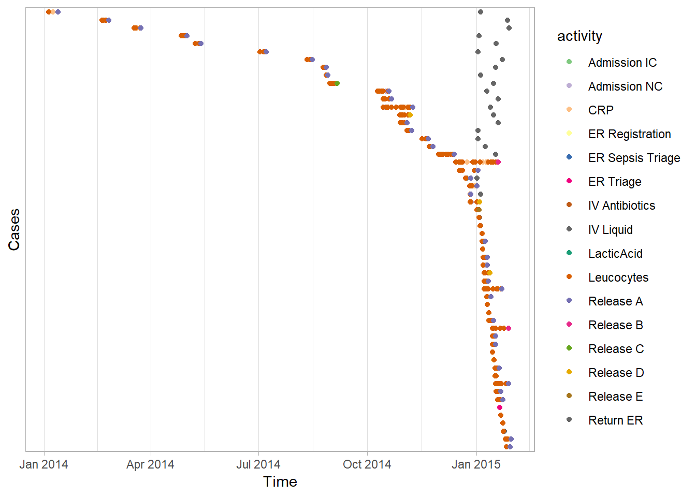
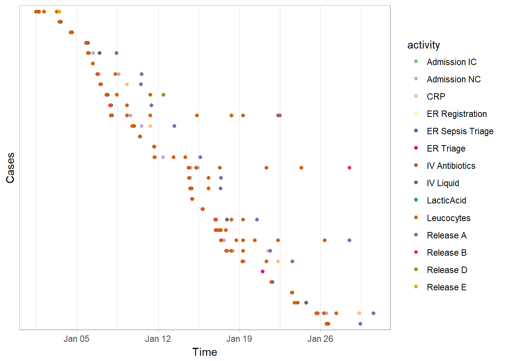

Subsetting event data
Nexto more generic data filtering methods discussed here
The filters for event data subsetting can mostly be divided into two type: event filters and case filters. Event filters will subset parts of cases based on criteria applied on the events (e.g. the resource which performed it), while case filters will subset complete cases, based on criteria applied on the cases (e.g. the trace length).
Each filter has a reverse argument, which allows to reverse the filter very easily. Furthermore, each filter has an interface-alternative, which can be called by adding a i before the function name.
Event filters
Activities labels
The filter activity function can be used to filter activities by name. It has three arguments
- the event log
- a vector of activities
- the reverse argument (FALSE or TRUE)
patients %>%
filter_activity(c("X-Ray", "Blood test")) %>%
activities## # A tibble: 2 x 3
## handling absolute_frequency relative_frequency
## <fct> <int> <dbl>
## 1 X-Ray 261 0.524
## 2 Blood test 237 0.476As one can see, there are only 2 distinct activities left in the event log.
Activity frequency
Relative filtering - using percentage
It is also possible to filter on activity frequency. This filter uses a percentile cut off, and will look at those activities which are most frequent until the required percentage of events has been reached. Thus, a percentile cut off of 80% will look at the activities needed to represent 80% of the events. In the example below, the least frequent activities covering 50% of the event log are selected, since the reverse argument is true.
patients %>%
filter_activity_frequency(percentage = 0.5, reverse = T) %>%
activities## # A tibble: 4 x 3
## handling absolute_frequency relative_frequency
## <fct> <int> <dbl>
## 1 Check-out 492 0.401
## 2 X-Ray 261 0.213
## 3 Blood test 237 0.193
## 4 MRI SCAN 236 0.192Absolute filtering - using interval
Instead of providing a target percentage, we can provide a target frequency interval. For example, only retain the activities which occur more than 300 times.
patients %>%
filter_activity_frequency(interval = c(300,500)) %>%
activities## # A tibble: 4 x 3
## handling absolute_frequency relative_frequency
## <fct> <int> <dbl>
## 1 Registration 500 0.252
## 2 Triage and Assessment 500 0.252
## 3 Discuss Results 495 0.249
## 4 Check-out 492 0.248When we don’t now the maximal frequency - 500 in this case, we can use an open interval by using NA.
patients %>%
filter_activity_frequency(interval = c(300, NA)) %>%
activities## # A tibble: 4 x 3
## handling absolute_frequency relative_frequency
## <fct> <int> <dbl>
## 1 Registration 500 0.252
## 2 Triage and Assessment 500 0.252
## 3 Discuss Results 495 0.249
## 4 Check-out 492 0.248Resource labels
Similar to the activity filter, the resource filter can be used to filter events by listing on or more resources.
patients %>%
filter_resource(c("r1","r4")) %>%
resource_frequency("resource")## # A tibble: 2 x 3
## employee absolute relative
## <fct> <int> <dbl>
## 1 r1 500 0.679
## 2 r4 236 0.321Resource frequency
Instead of filtering events by the resource that performed the activity, we can also filter event by the frequency of the resource. This happens in the same way as for the activity frequency filter. The filter below gives us the 80% activity instances performed by the most common resources.
patients %>%
filter_resource_frequency(perc = 0.80) %>%
resources()## # A tibble: 5 x 3
## employee absolute_frequency relative_frequency
## <fct> <int> <dbl>
## 1 r1 500 0.222
## 2 r2 500 0.222
## 3 r6 495 0.220
## 4 r7 492 0.219
## 5 r5 261 0.116Alternatively, using the interval argument, we can select resources who perform between 200 and 300 activity instances.
patients %>%
filter_resource_frequency(interval = c(200,300)) %>%
resources()## # A tibble: 3 x 3
## employee absolute_frequency relative_frequency
## <fct> <int> <dbl>
## 1 r5 261 0.356
## 2 r3 237 0.323
## 3 r4 236 0.322Trim cases
The trim filter is a special event filter, as it also take into account the notion of cases. In fact, it trim cases such that they start with a certain activities until they end with a certain activity. It requires two list: one for possible start activities and one for end activities. The cases will be trimmed from the first appearance of a start activity till the last appearance of an end activity. When reversed, these slices of the event log will be removed instead of preserved.
patients %>%
filter_trim(start_activities = "Registration", end_activities = c("MRI SCAN","X-Ray")) %>%
process_map(type = performance())Trim to time window
Instead of triming cases to a particular start and/or end activity, we can also trim cases to a particular time window. For this we use the function filter_time_period with filter_method trim. This filter needs a time interval, which is a vector of length 2 containing data/datetime values. These can be created easily using lubridate function, e.g. ymd for year-month-day formats.
This example takes only activity instances which happened (at least partly, i.e. some events) in December of 2017.
library(lubridate)
patients %>%
filter_time_period(interval = ymd(c(20171201, 20171231)), filter_method = "trim") %>%
summary()## Number of events: 290
## Number of cases: 36
## Number of traces: 13
## Number of distinct activities: 7
## Average trace length: 8.055556
##
## Start eventlog: 2017-11-30 20:29:12
## End eventlog: 2017-12-31 08:00:08## handling patient employee handling_id
## Blood test :30 Length:290 r1:52 Length:290
## Check-out :48 Class :character r2:52 Class :character
## Discuss Results :54 Mode :character r3:30 Mode :character
## MRI SCAN :30 r4:30
## Registration :52 r5:24
## Triage and Assessment:52 r6:54
## X-Ray :24 r7:48
## registration_type time .order
## complete:145 Min. :2017-11-30 20:29:12 Min. : 1.00
## start :145 1st Qu.:2017-12-06 01:04:43 1st Qu.: 73.25
## Median :2017-12-13 13:12:47 Median :145.50
## Mean :2017-12-13 20:14:51 Mean :145.50
## 3rd Qu.:2017-12-19 18:09:13 3rd Qu.:217.75
## Max. :2017-12-31 08:00:08 Max. :290.00
## Using a different filter method (start, complete, contained or intersecting), this filter can also act as a case filter (see below).
Case filters
Instead of filtering events, or parts of cases, we can also filter event data by taking (or leaving) cases as a whole. Using edeaR, there are the following options to filter cases:
- Based on performance
- Throughput time
- Processing time
- Trace length
- Based on control-flow characteristics
- Presence/absence of activities
- Start/End points
- Precedence constraints
- Frequency of trace
- Time period
Throughput time
Filtering on throughput time can be done in an absolute and relative way, just as for many other filters.
- Absolute: specific a throughput time interval
- Relative: specific a percentage target
For instance, we can filter cases with a throughput time between 50 and 100 hours. Notice that setting the time unit argument appropriately is important in this case.
patients %>%
filter_throughput_time(interval = c(50, 100), units = "hours") %>%
throughput_time(units = "hours")## min q1 median mean q3 max st_dev iqr
## 50.08389 63.55361 78.62292 76.84821 87.43417 99.95861 13.76536 23.88056
## attr(,"units")
## [1] "hours"Alternatively, we can filter the 50% cases with the lowest throughput time.
patients %>%
filter_throughput_time(percentage = 0.5) %>%
throughput_time(units = "hours")## min q1 median mean q3 max st_dev
## 35.90611 81.16660 103.51056 99.84844 120.75403 145.86722 26.59339
## iqr
## 39.58743
## attr(,"units")
## [1] "hours"In both cases, the selection can be negated using the reverse argument. When using an interval, one of the limits can be set to NA to create an open interval.
Processing time
Filtering on processing time happens in exactly the same way as the filter on throughput time, as the examples below show.
patients %>%
filter_processing_time(interval = c(50, 100), units = "hours") %>%
processing_time(units = "hours")## min q1 median mean q3 max st_dev iqr
## NA NA NA NaN NA NA NA NApatients %>%
filter_processing_time(percentage = 0.5) %>%
processing_time(units = "hours")## min q1 median mean q3 max st_dev
## 10.717778 23.043750 24.945000 24.387612 26.423264 27.726944 2.657736
## iqr
## 3.379514Trace length
Filtering on trace length is similar to filters on processing or throughput time. Only the units argument is not needed here.
patients %>%
filter_trace_length(interval = c(2, 5)) %>%
trace_length(units = "hours")## min q1 median mean q3 max st_dev iqr
## 2.000000 5.000000 5.000000 4.951128 5.000000 5.000000 0.338502 0.000000patients %>%
filter_trace_length(percentage = 0.5) %>%
trace_length()## min q1 median mean q3 max st_dev
## 5.0000000 5.0000000 5.0000000 5.4600000 6.0000000 6.0000000 0.4993972
## iqr
## 1.0000000Activity presence
When looking at control-flow, we can select cases that contain a specific activity, for instance a X-Ray scan.
patients %>%
filter_activity_presence("X-Ray") %>%
traces## # A tibble: 3 x 3
## trace absolute_frequen~ relative_frequen~
## <chr> <int> <dbl>
## 1 Registration,Triage and Assessment,~ 258 0.989
## 2 Registration,Triage and Assessment,~ 1 0.00383
## 3 Registration,Triage and Assessment,~ 2 0.00766Or that don’t have a specific activity.
patients %>%
filter_activity_presence("X-Ray", reverse = T) %>%
traces## # A tibble: 4 x 3
## trace absolute_frequen~ relative_freque~
## <chr> <int> <dbl>
## 1 Registration,Triage and Assessment,B~ 234 0.979
## 2 Registration,Triage and Assessment,B~ 2 0.00837
## 3 Registration,Triage and Assessment,B~ 1 0.00418
## 4 Registration,Triage and Assessment 2 0.00837We can also test more than one activity. In this case, we can require “all”, “one_of” or “none” of them to be present, through setting the argument method correctly.
For example, there are no case that have both X-Ray and MRI-SCAN
patients %>%
filter_activity_presence(c("X-Ray", "MRI SCAN"), method = "all") %>%
traces## [1] trace absolute_frequency relative_frequency
## <0 rows> (or 0-length row.names)Almost all have on of them.
patients %>%
filter_activity_presence(c("X-Ray", "MRI SCAN"), method = "one_of") %>%
traces## # A tibble: 5 x 3
## trace absolute_frequen~ relative_freque~
## <chr> <int> <dbl>
## 1 Registration,Triage and Assessment,B~ 234 0.471
## 2 Registration,Triage and Assessment,X~ 258 0.519
## 3 Registration,Triage and Assessment,B~ 2 0.00402
## 4 Registration,Triage and Assessment,X~ 1 0.00201
## 5 Registration,Triage and Assessment,X~ 2 0.00402And 3 have none of them.
patients %>%
filter_activity_presence(c("X-Ray", "MRI SCAN"), method = "none") %>%
traces## # A tibble: 2 x 3
## trace absolute_frequency relative_frequen~
## <chr> <int> <dbl>
## 1 Registration,Triage and Assessment~ 1 0.333
## 2 Registration,Triage and Assessment 2 0.667End points
Another way is to select cases with a specific start and or end activity. In case of the patients data set, all cases start with “Registration”. Filtering cases that don’t start with Registration gives an empty log.
patients %>%
filter_endpoints(start_activities = "Registration", reverse = T)## Event log consisting of:
## 0 events
## 0 traces
## 0 cases
## 0 activities
## 0 activity instances
##
## # A tibble: 0 x 7
## # ... with 7 variables: handling <fct>, patient <chr>, employee <fct>,
## # handling_id <chr>, registration_type <fct>, time <dttm>, .order <int>If we are interested to see the “completed” cases, those that start with Registration and end we “Check-out”, we can apply the following filter.
patients %>%
filter_endpoints(start_activities = "Registration", end_activities = "Check-out") %>%
process_map()Precedence
Another control-flow filtering approach is to look at precedences between activities. The filter_precedence function uses 5 different inputs
- A list of (one or more) possible antecedent activities (“source”-activities)
- A list of (one or more) possible consequent activities (“target”-activities)
- A precedence_type
- directly_follows
- eventually_follows
- A filter_method: all, one_of or none of the precedence rules should hold.
- A reverse argument
If there is more than one antecedent or consequent activity, the filter will test all possible pairs. The filter_method will tell the filter whether all of the rules should hold, at least one, or none are allowed.
For example, take the patients data. The following filter takes only cases where “Triage and Assessment” is directly followed by “Blood test”.
patients %>%
filter_precedence(antecedents = "Triage and Assessment",
consequents = "Blood test",
precedence_type = "directly_follows") %>%
traces## # A tibble: 3 x 3
## trace absolute_frequen~ relative_freque~
## <chr> <int> <dbl>
## 1 Registration,Triage and Assessment,B~ 234 0.987
## 2 Registration,Triage and Assessment,B~ 2 0.00844
## 3 Registration,Triage and Assessment,B~ 1 0.00422The following selects cases where Triage and Assessment is eventually followed by both Blood test and X-Ray, which never happens.
patients %>%
filter_precedence(antecedents = "Triage and Assessment",
consequents = c("Blood test", "X-Ray"),
precedence_type = "eventually_follows",
filter_method = "all") %>%
traces## [1] trace absolute_frequency relative_frequency
## <0 rows> (or 0-length row.names)The next filter selects cases where Triage and Assessement is eventually followed by at least one the three antecedents, by changing the filter method to one_of.
patients %>%
filter_precedence(antecedents = "Triage and Assessment",
consequents = c("Blood test", "X-Ray", "MRI SCAN"),
precedence_type = "eventually_follows",
filter_method = "one_of") %>%
traces## # A tibble: 6 x 3
## trace absolute_frequen~ relative_freque~
## <chr> <int> <dbl>
## 1 Registration,Triage and Assessment,B~ 234 0.470
## 2 Registration,Triage and Assessment,X~ 258 0.518
## 3 Registration,Triage and Assessment,B~ 2 0.00402
## 4 Registration,Triage and Assessment,X~ 1 0.00201
## 5 Registration,Triage and Assessment,B~ 1 0.00201
## 6 Registration,Triage and Assessment,X~ 2 0.00402This final example only retains cases where Triage and Assessment is not followed by any of the three consequent activities. The result is 2 incomplete cases where the last activity was Triage and Assessment.
patients %>%
filter_precedence(antecedents = "Triage and Assessment",
consequents = c("Blood test", "X-Ray", "MRI SCAN"),
precedence_type = "eventually_follows",
filter_method = "none") %>%
traces## # A tibble: 1 x 3
## trace absolute_frequency relative_frequency
## <chr> <int> <dbl>
## 1 Registration,Triage and Assessment 2 1.Trace Frequency
Filtering on trace frequency is similar to the filters on activity/resource frequence and the performance filter: you can choose between a percentage target or between an frequency interval.
Select 80% of the cases that share the most common traces.
sepsis %>%
filter_trace_frequency(percentage = 0.8) %>%
n_cases()## [1] 841Or the 20% least common ones.
sepsis %>%
filter_trace_frequency(percentage = 0.2) %>%
n_cases()## [1] 212Or the cases of which the trace frequency is less than 50.
sepsis %>%
filter_trace_frequency(interval = c(0,50)) %>%
n_cases()## [1] 1050Time period
Filtering cases by time period can be done using the filter_time_period introduced above. There are four different methods that result in case filters:
- start: all cases started in an interval
- complete: all cases completed in an interval
- contained: all cases contained in an interval
- intersecting: all cases with some activity in an interval
The following four example dotted charts show the impact of the four different methods using the same interval.
sepsis %>%
filter_time_period(interval = ymd(c(20150101, 20150131)), filter_method = "start") %>%
dotted_chart
sepsis %>%
filter_time_period(interval = ymd(c(20150101, 20150131)), filter_method = "complete") %>%
dotted_chart
sepsis %>%
filter_time_period(interval = ymd(c(20150101, 20150131)), filter_method = "contained") %>%
dotted_chart
sepsis %>%
filter_time_period(interval = ymd(c(20150101, 20150131)), filter_method = "intersecting") %>%
dotted_chart